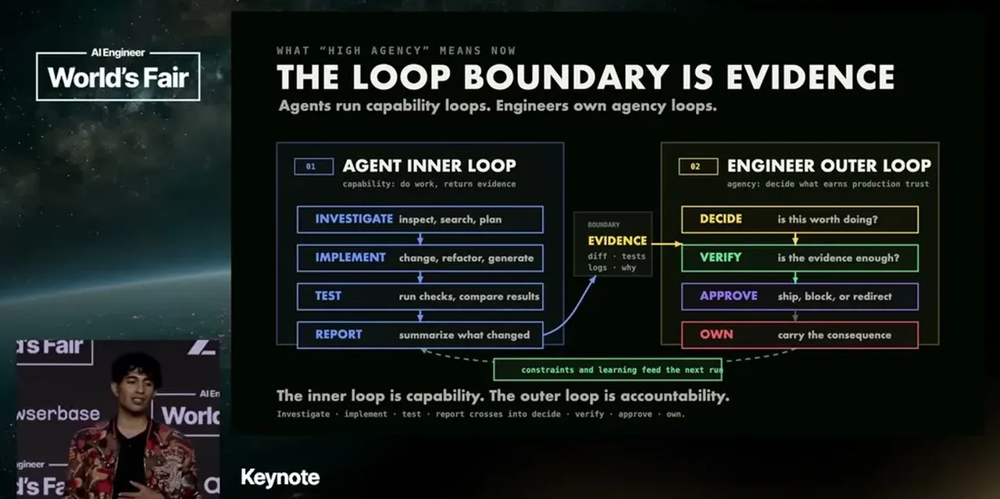

The engineer of the future is the person who is able to choose what is worth doing
If you only read one thing
- Sonar's 2026 research found AI-assisted code is no longer marginal, and that clean repos use fewer tokens and cause fewer revisits than messy ones at similar pass rates.
- 96% of engineers don't fully trust AI code but only about half always verify before committing, creating a distrust-without-bandwidth gap; a Wharton study found people felt more confident even when AI was wrong 73% of the time.
- Osmani's operating rule: 'explain it or don't ship it' — someone has to be able to defend the change, not just glance at a diff.
Osmani cites Sonar's 2026 survey to argue AI-assisted code has moved from marginal to mainstream in most codebases. A separate Sonar study found clean and messy repos had similar pass rates, but clean code used fewer tokens and caused fewer revisits, tying maintainability directly to agent efficiency.
“One of Sonar's 2026 survey said that AI-assisted code is no longer marginal.”
▶ watch at 03:34“Another one of Sonar's research uh studies found that clean and messy repos had roughly the same pass rates, but clean code actually used fewer tokens and caused fewer revisits.”
▶ watch at 04:05
Engineers are largely skeptical of AI-generated code, but verification capacity hasn't kept pace with generation volume. A Wharton study found people felt more confident in their answer even when AI's answer was wrong the majority of the time, which Osmani frames as the real failure mode: borrowed confidence, not AI use itself.
“If 96% of people don't fully trust that code, but only about half always verify before committing, we have this danger that we've got distrust without bandwidth.”
▶ watch at 04:40“When AI was wrong, 73% of people still thought that they they you know they picked the wrong answer and they felt more sure.”
▶ watch at 11:25
Drawing on Mitchell Hashimoto's definition, Osmani frames taste as the ability to make quality judgments where no objective metric yet exists. He argues taste decays more slowly than other technical edges (speed, recall, verification) but is not a permanent moat either.
“Taste is the ability to make high-quality qualitative judgments where no objective metric exists yet.”
▶ watch at 07:10
Osmani names cognitive debt (erosion of your own understanding from over-delegating), cognitive surrender (accepting AI's answer as yours before forming a judgment), and orchestration tax (running many agents in parallel without more human bandwidth to actually review them). His fix is treating review as a designed system, not a glance at the end.
“cognitive debt is the erosion of your understanding and memory around how to solve problems.”
▶ watch at 09:45“More AI agents running does not mean that there is more of you available. Your cognitive bandwidth does not parallelize.”
▶ watch at 11:52
Osmani's proposed boundary is not 'human looks at AI output' but evidence and responsibility: someone must be able to explain and defend a change before it ships. He predicts automation will keep moving the floor of engineering work upward rather than eliminating the need for engineers.
“the boundary is not human looks at AI output. The boundary is evidence and responsibility. So, here's an operational rule. Explain it or don't ship it.”
▶ watch at 16:10“Automation moves the floor for all of us. Engineering continues to move up a level”
▶ watch at 17:05


Underlying detail — every claim, typed and timestamped (9)
| Stance | Claim | t |
|---|---|---|
| asserts | Sonar's 2026 survey found AI-assisted code is no longer a marginal share of codebases. | 03:34 |
| asserts | Clean and messy repos had similar pass rates, but clean code used fewer tokens and caused fewer revisits. | 04:05 |
| warns | Most engineers distrust AI code but lack the capacity to verify all of it before committing. | 04:40 |
| warns | People report feeling more confident even when AI's answer was wrong, per a Wharton study. | 11:25 |
| asserts | Taste is defined as the ability to make quality judgments where no objective metric yet exists. | 07:10 |
| warns | Over-delegating to agents erodes an engineer's own understanding of the systems they ship. | 09:45 |
| warns | Running more agents in parallel does not increase a human's capacity to review their output. | 11:52 |
| recommends | Code should only ship if someone can explain and defend it, not merely glance at it. | 16:10 |
| predicts | Automation lowers the floor of engineering work without reducing the need for engineers overall. | 17:05 |
Machine-readable copy embedded in this page (script#ontology) and in the corpus ontology.